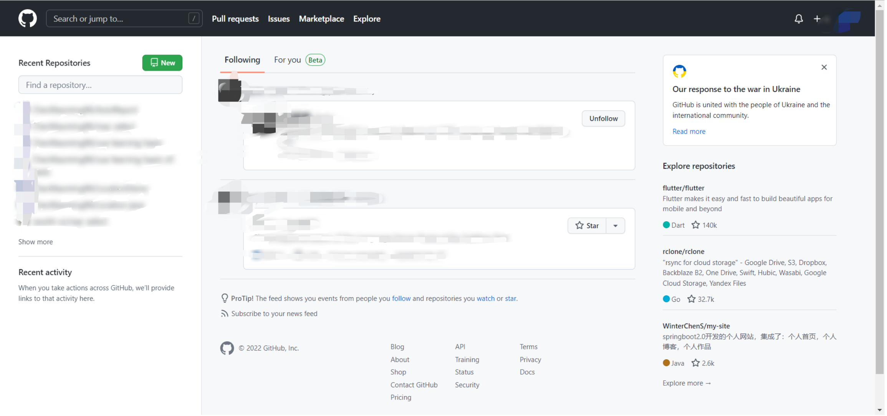
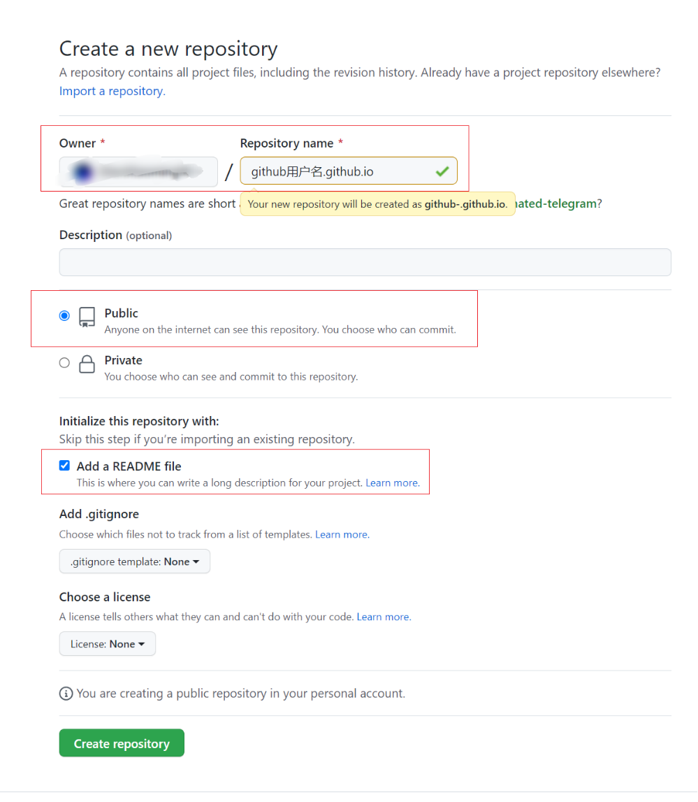
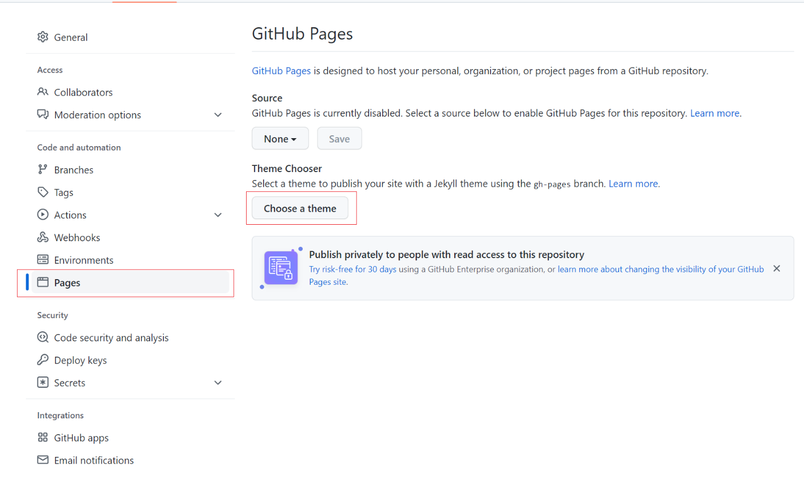
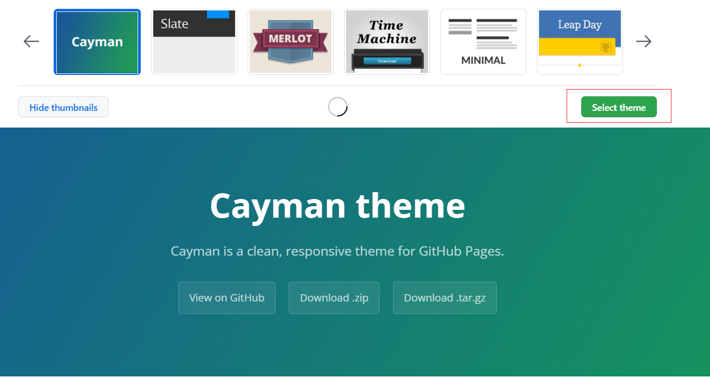
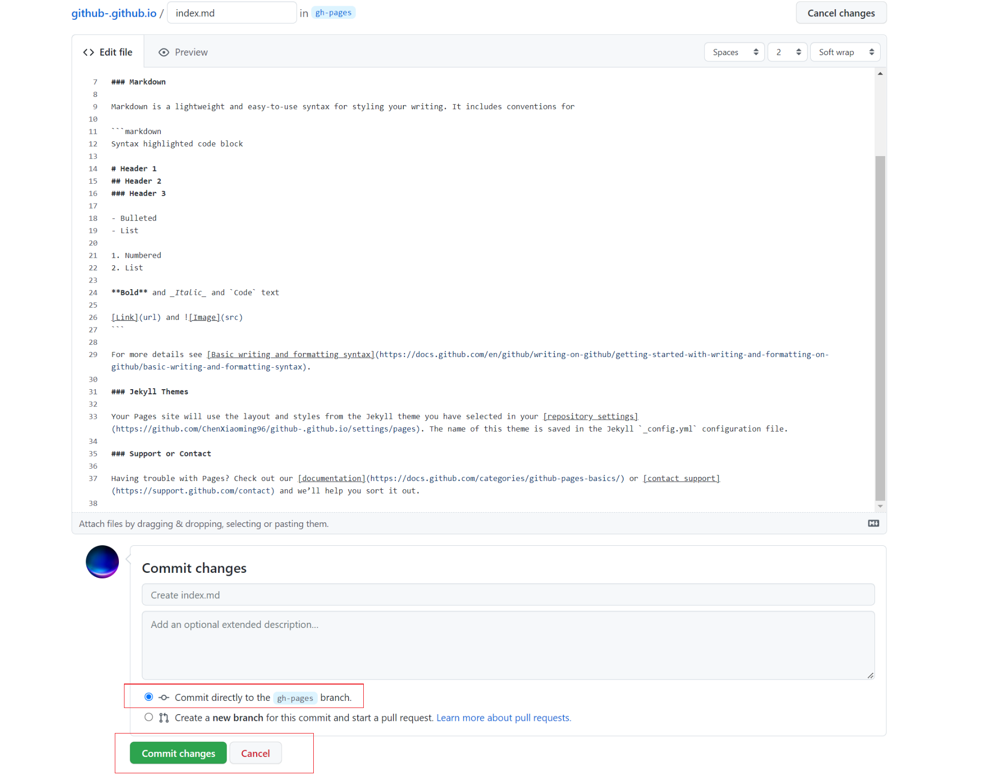
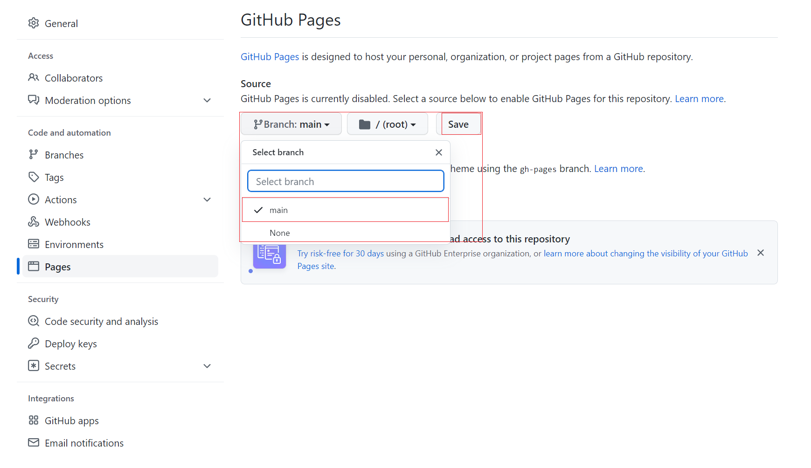

First Blog
如何利用github搭建属于自己的博客

第一步、注册github账号，github用户名取一个自己满意的用户名以便后续作为域名；
第二步、新建Repositories（Repositories必须为public，private构建需要付费），Repositories取名为github用户名.github.io（只有这样取名才能用github用户名.github.io直接访问博客，如果是其他格式，最后博客网址会很长）
第三步、进入刚才创建的Repositories，点击Settings，左侧目录点击Pages，点击Choose a theme，选一个自己喜欢的博客主题，点击Select theme，然后就拉到最下面点击Commit changes
  第四步、可以在Settings→Pages将代码改到主分支，此时输入github用户名.github.io应该已经可以访问到初始的博客页面了
第五步、可以git clone把代码下载下来进行修改，把克隆下来的文件除了.git文件以外的文件和文件夹全部删掉，再从网上找到免费的静态html页面资源直接放到目录下，再git push就可以更换博客风格，然后再根据自己的需要进行改变
附上我的博客原型来源：https://html5up.net/